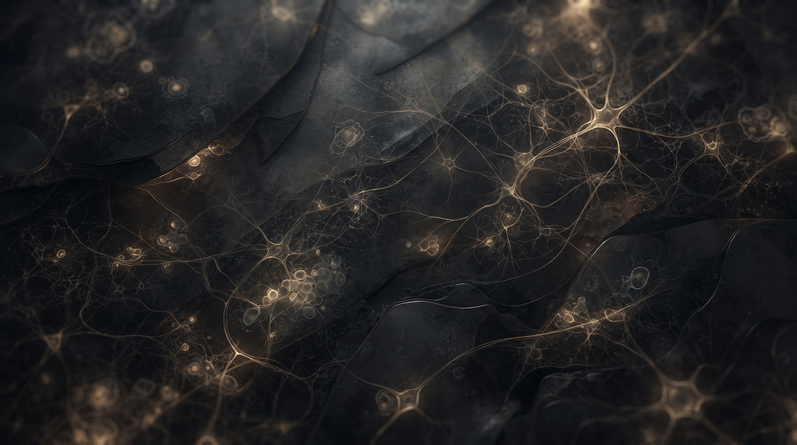

Atlas Integrado de Ciências Morfológicas
O mais completo acervo digital focado no ciclo básico da Medicina. Explore estruturas microscópicas e anatômicas em altíssima definição.
Histologia
Estudo da organização tecidual e celular em lâminas virtuais de alta definição com diferentes colorações histológicas.
Anatomia
Estudo topográfico da arquitetura corporal e acidentes anatômicos em peças e cortes cadavéricos reais (em breve).
Patologia
Análise das alterações morfológicas teciduais, processos inflamatórios, mecanismos de lesão e neoplasias (em breve).
Parasitologia
Identificação morfológica e características estruturais de protozoários e helmintos de interesse médico (em breve).
Microbiologia
Análise morfotintorial e identificação de arranjos bacterianos e estruturas fúngicas em lâminas (em breve).
Um compêndio morfológico construído por estudantes para estudantes.
O Palas Atlas nasceu da necessidade de integrar a teoria morfológica à rotina prática laboratorial. Unimos a precisão científica dos principais manuais à curadoria acadêmica de estudantes, monitores e professores de Medicina.
Conhecer a história, proposta e corpo editorial →Acervo Cadastrado e Controle de Publicação
| Peça / Lâmina | Disciplina | Tópico | Coloração | Status | Pinos | Ações |
|---|---|---|---|---|---|---|
| Conectando ao Google Cloud Firestore e sincronizando lâminas... | ||||||
Cadastro de Camadas
Ordenamento de Camadas
Gerencie a profundidade da dissecação por região.
| Ordem | Região | URL Imagem | Ações |
|---|---|---|---|
| Conectando ao banco de dados... | |||
Configuração Geral do Simulado
Selecione os tópicos das 5 áreas morfológicas do Ciclo Básico para compor a prova prática unificada.
Anatomia
Carregando acervo anatômico...
Histologia
Carregando acervo histológico...
Patologia
Carregando acervo de patologia...
Parasitologia
Carregando acervo de parasitologia...
Microbiologia
Carregando acervo de microbiologia...
Título do Espécime
Exame de Estrutura Alvo (Radar Pulse)
Conclusão do Simulado
Métrica de precisão clínica computada ao longo das lâminas e peças do teste.